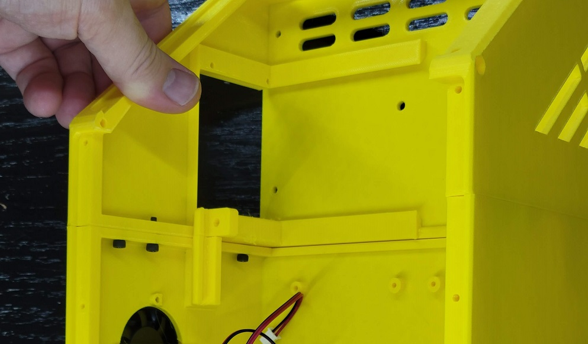
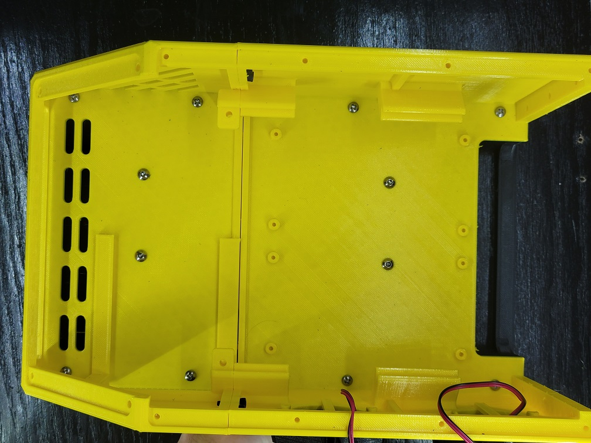
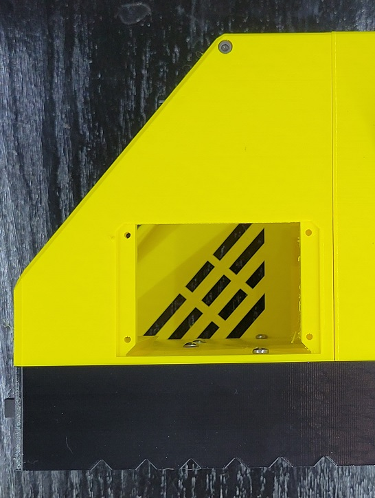
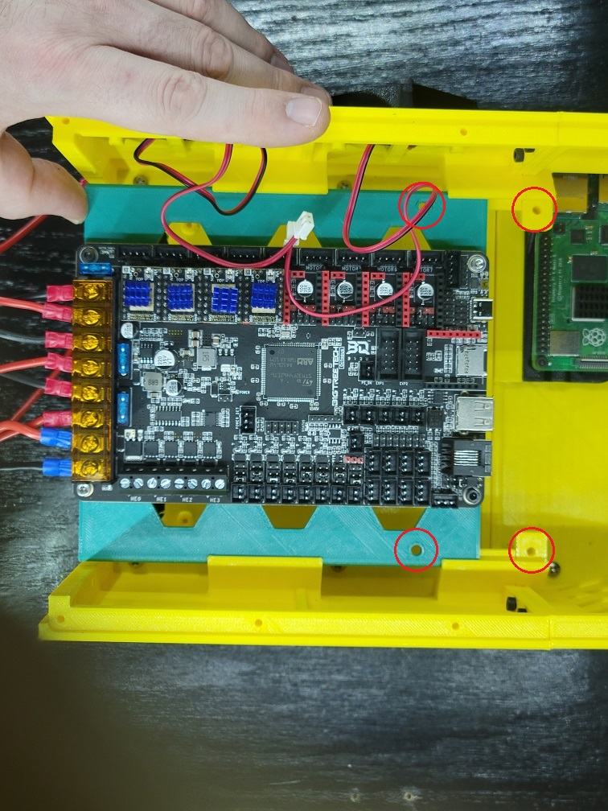
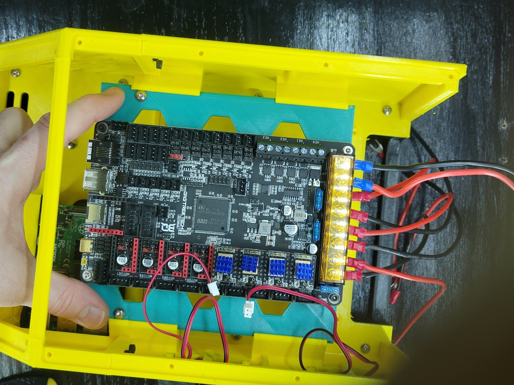
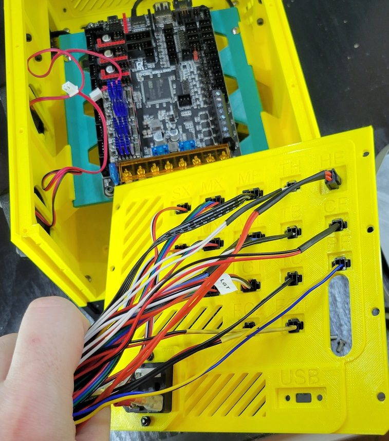
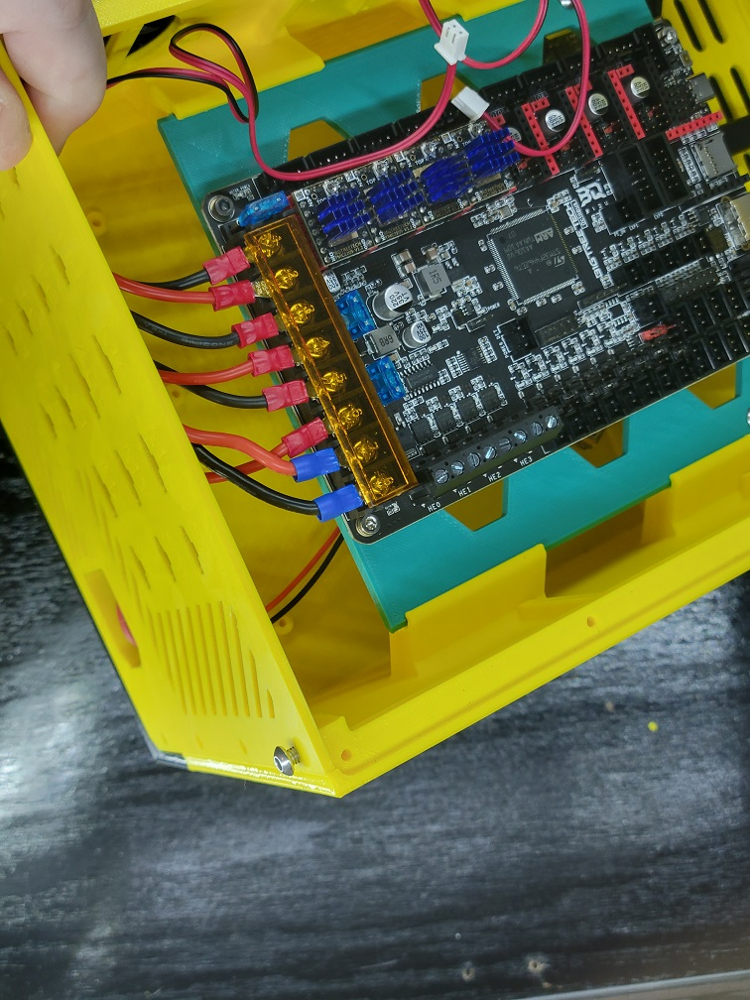

Assembly Guide
Base
You will need:
- 4x M4 x 16mm screws (20mm is also acceptable)
- 1x SPST toggle switch
- The printed front and rear base
| Step | Example |
|---|---|
| The two pieces of the base both have two (2) M4 screw holes on each side. Use the four (4) M4 screws to fasten them togther. Note: The sawtooth air vents should be aligned the same way on the front and back. |  |
| Insert the power switch into the front. The sides should compress until it snaps in place. | |
Main Body
You will need:
- 6x M3 x 8-12mm screws (8, 10, or 12mm will work)
- 8x M3 x 12-20mm screws or 8x M3/#6 sharp point screws (12mm-20mm or 1/2" to 3/4")
- 2x M3 x 16mm screws
- 4x M4 x 8mm screws
- The printed front and rear main body
- The printed front crossbar
- Your power supply unit (PSU)
| Step | Example |
|---|---|
| Assemble the front and rear using six (6) M3 screws. Any length between 8mm and 12mm will work. Make sure you insert the screws fron the back side into the front of the case. |  |
| Here we have all six screws inserted. The fans in the photos were added early; we will do those shortly. |  |
| The power supply fits under the main body and is slightly offset towards the front right. Line up the holes on the top of the power supply with the main body. |  |
| Mount the power supply using 4x M4 x 8mm screws. |  |
| Place the assembled main body on top of the base. There are eight (8) ~3mm holes that should line up between the base and main body, four on each side. |  |
| Fasten the main body and base together with your long M3 screws or sheet metal screws. |  |
| Place the crossbar in place at the joint between the lid and display mounts. Take note of the orientation in the picture. |  |
| Using the two (2) M3 x 16mm screws, attach the crossbar with a screw in each side. |  |
{kind=link}
{kind=link}
Dual 40mm Exhaust Fans
You will need:
- 8x M3 x 12mm screws (10mm will also work)
- 2x 40x40x10mm fans
- Two printed 40mm Fan Cages
| Step | Example |
|---|---|
| Place a fan inside the cage with the stickered side of the motor facing away from the fan cage grill. Insert two M3 screws on opposing sides of the fan cage and through the fan's mounting holes. |  |
| Thread the fan's wires through the fan cutout, then line up the fan and cage with the mounting holes. Partially tighten both screws until at least two full turns of thread are holding the fan in place. |  |
| Insert and tighten the other two M3 screws. Finish tightening the screws until all four screws are firmly in place. |  |
| Ensure the fan wire feeds through the cutout without pinching or binding, then repeat the above process for the second fan. |  |
CPU Tray
You will need:
- 2-4 M3 x 6mm screws
- 2-4 M3 x 8mm screws
- A Raspberry Pi 3B+ or 4B
- The printed CPU tray for your Raspberry Pi
| Step | Example |
|---|---|
| The Raspberry Pi comes with M2.5 screw holes, but can be bored out easily with M3 screws. Mount your Raspberry Pi with 6mm M3 screws onto the tray, using at least two screws. |  |
| Slide the tray into the side bay on the left side. |  |
| 3. Use at least two (2) M3 x 8mm screws to fasten the tray in place. |  |
{kind=link}
MCU Tray
You will need:
- 2x M4 x 8mm screws
- 2-4 M3 x 6mm screws
- Your MCU (e.g. BTT Octopus)
- The printed tray for your MCU
| Step | Example |
|---|---|
| Attach your MCU with at least two M3 x 6mm screws to the tray. The screw holes face forward when inserted to the case; prefer to align your SD card connector to the front and power connectors to the back. Your likely limitation is the length of the SD card extension connector, if you plan to use one. |  |
| Slide the tray from the back of the assembled case to the front. Stop when the two screw holes on the sides align. |  |
| Tighten the tray in place with two (2) M4 x 8mm screws. |  |
| Now is a good time to attach the wires for your power supply, as well. |  |
{kind=link}
{kind=link}
Front Panel
You will need:
- 2x M3 x 8mm screws
- Your printed front panel
- Any accessories that mount to it and fasteners
| Step | Example |
|---|---|
| If you have any add-ons for your front panel, like an MicroSD extension, install these first. |  |
| Insert the front panel and attach with two (2) M3 screws. |
Rear Panel
You will need:
- 4-8 M4 x 8mm screws
- Your printed rear panel
- Any connectors or other accessories for the rear panel
| Step | Example |
|---|---|
| If you are using the rear panel to mount connectors, it is strongly advised that you insert the connectors to the panel first, before installing the panel or connecting any wires to the board. |  |
| Line up the rear panel with the cutout on the assembled case. It may pinch near the base--this is due to the walls leaning outwards further up as they cool. The rear panel will help keep the walls aligned. Check where the screw holes line up. If any are clearly unaligned, leave those for last. | |
| Starting with a screw hole near the top, partially thread an M4 screw in. Stop once you can feel the screw threads grab the main body at least two full turns. |  |
| Find another screw hole near the top on the opposite side and partially thread it in two full turns. |  |
| Fill in a screw hole on each side on the bottom half, at a minimum. Continue to insert screws into the remaining holes. If any of the holes are still unaligned, you can leave them empty or insert a screw at an angle and thread. It may work itself straight. |  |
| Finish tightening all of the screws. |  |
| Now that the power switch, power connector, and PSU are all installed, it's a good time to wire them up. |
{kind=link}
{kind=link}
Display Screen
You will need:
- 4 M4 x 8mm screws
- 4 M3 x 6mm screws
- Your printed display mount
- Your display
- If your display mount contains more than one piece, screws to join them.
| Step | Example |
|---|---|
| Remove the knob on the display screen. It should pull off. |  |
| Slide the screen into place on the mount and fasten with four (4) M3 x 6mm screws. |  |
| Re-attach the knob to the display screen. Again, it should slide into place with light force. If your display mount has multiple pieces, attach those now (usually only applies to displays with side-mount SD cards). | |
| Attach the display connectors and slide the ends in first. |  |
| Attach the display panel with two (2) M4 x 8mm screws on opposings sides. Avoid overtightening. |  |
| The angle of the display may require inserting the remaining two (2) screws at an angle. You may also need to back out the first screws slightly and angle them as well. This is an artifact of the display angle. |  |
Lid
| Step | Example |
|---|---|
| The lid is highly customizable. Here we're using a simple lid with a handle. |  |
| All of the lids attach with between four (4) and eight (8) M3 x 8mm screws, although any length up to 16mm will work. |  |
Note
Because the screws are attached directly to plastic, removing and reattaching the lid will eventually wear out the holes. I recommend starting with shorter screws and gradually switching to longer ones over time to get "fresh" plastic.